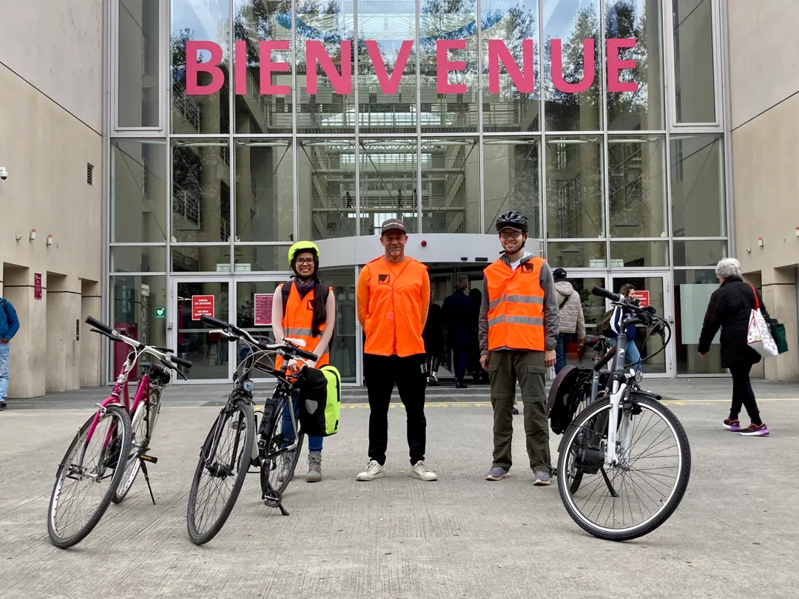

MOBILITÉ DOUCE
Apprendre à circuler à vélo : elles et ils l'ont fait !

Qui a suivi un cours de vélo à l'âge adulte ? Peu de monde. Pourtant, on apprend tous à pédaler entre 3 et 5 ans — et ensuite, on se débrouille seul pour le reste de sa vie.
Elle et lui ont sauté le pas
Jessica et Daniel voulaient se déplacer de façon plus saine et plus écologique. Elle et lui ont suivi une formation vélo pour adultes et ont gagné en autonomie. Un cap franchi avec plaisir, qu'elle et lui ne regrettent pas.
Alors pourquoi si peu de monde leur emboîte le pas ? Ces cours sont pourtant proposés par de nombreux organismes et gratuits pour les participantes et participants : entreprises, universités, collectivités, magasins de cycles… Les places restent malgré tout difficiles à remplir.
Celles et ceux qui franchissent la porte le font souvent à deux, presque timidement, prêts à recevoir des conseils éprouvés par le temps. La formation passe vite, et les retours sont unanimement positifs.
« Ça ne s'oublie pas » : un mythe tenace
D'autres balaient l'idée d'un revers de main : « c'est comme le vélo, ça ne s'oublie pas ». Après 30 ans de pratique comme formateur, j'y vois surtout une question d'image : le vélo est associé à la liberté et à l'autonomie, acquises dans l'enfance. On imagine mal devoir « réapprendre » quelque chose d'aussi instinctif.
Pourtant, un rail de tram, une plaque de verglas ou un giratoire mal négocié suffisent à faire chuter n'importe qui. Ces petits incidents poussent parfois à abandonner un mode de déplacement qui, bien maîtrisé, améliore durablement la santé et le bien-être.
Un sport pris au sérieux… seulement au sommet
On trouve normal de suivre un cours de conduite automobile sur neige ou un stage de pilotage sur circuit. Le vélo, lui, n'est pris au sérieux que chez les sportives et sportifs d'élite, dont la virtuosité fascine autant qu'elle inspire l'achat de matériel toujours plus technique — sans pour autant démocratiser le vélo au quotidien. La presse adore ça : le Tour de France reste la grand-messe du cyclisme.
Résultat, beaucoup de vélos prennent la poussière au garage, aux côtés de l'abonnement de fitness pris en janvier. On note toutefois une tendance encourageante : de plus en plus de parents, souvent des mamans, adoptent vélos cargos, sièges et remorques pour transporter leurs enfants. Chapeau l'artiste !
Genève à la traîne
Le vélo reste minoritaire sur les routes de Suisse romande, malgré un regain d'intérêt récent. En Suisse alémanique, à Bâle ou à Berne, comme plus au nord à Copenhague ou Amsterdam, la part modale du vélo en centre-ville avoisine les 50 %.
La différence est avant tout culturelle et sociale : les clichés associés au vélo adulte pèsent encore sur son développement. Pourtant, les bénéfices sont mesurables. Plus les cyclistes sont nombreux, moins les accidents qui les impliquent le sont. À cela s'ajoutent les effets sur la santé physique et mentale, la réduction de la congestion urbaine, les retombées économiques — et, tout simplement, le plaisir d'échanger un sourire à vélo plutôt que coincé dans un bouchon.
L'accompagnement fait toute la différence
Les nouvelles et nouveaux cyclistes ont tendance à reprendre les trajets qu'elles et ils empruntaient en voiture ou à pied, se retrouvant ainsi mêlés au trafic lourd — dangereux, désagréable, et souvent décourageant. Se faire accompagner dans la découverte des itinéraires cyclables permet d'emprunter des trajets aménagés pour les mobilités douces, et d'apprendre les bons réflexes pour rouler en sécurité.
Un cours de vélo passe à votre portée ? C'est le moment de vous inscrire.
Formations gratuites, ouvertes à toutes et tous — renseignements auprès de votre université.
Stéphane Bachmann / Genevavelo